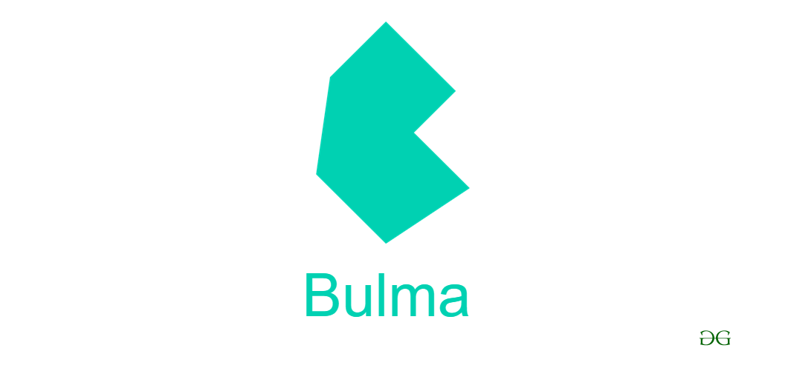

Propósito del sitio
El propósito de este sitio es para informar sobre diferentes frameworks de CSS, explicando sus características y sus ventajas y desventajas; Además también se explicará sobre el posicionamiento web, porque es importante y algunos consejos para implementarlo.
Frameworks CSS
Si bien muchas cosas en el mundo de la programación las puede realizar uno mismo, claro está con el conocimiento necesario, no todas las veces es lo más óptimo, muchas veces es mejor optar por usar código ya desarrollado por demás personas para así agilizar en gran medida el proceso de desarrollo, dicha práctica resulta en la famosa frase "no reinventar la rueda" que seria usar código ya desarrollado para nuestros proyectos.
Lo anteriormente dicho es aplicable al diseño de sitios web, que como bien se sabe el lenguaje de estilos usados es CSS, en este ámbito los frameworks o librerías de CSS ayudan con un sistema de columnas, distribución de contenidos, diversas funcionalidades como alineación, colores, interacciones, entre otras; así como también la aplicación de estilos a diversos elementos como alertas, tarjetas, listas, etc. A continuación enumeraremos algunos frameworks de CSS:
-
Bootstrap
En este su principal característica es el diseño responsive, el cual con la ayuda de varias clases extras la página web ya era apta para diversas pantallas, además Bootstrap implementa un sistema de columnas basado en flexbox el cual es fácil de usar y otra característica a resaltar es el soporte que este posee, permitiendo que se creen diversidad versiones implementadas en otras tecnologías, por ejemplo BootrapVue.
Como punto en contra seria que debido a su diseño predefinido hace que la parte visual de las páginas web sean muy parecidas entre sí con otras que usan el mismo framework, más sin embargo se puede sobreescribir el código css para así dar más personalización.

-
Foundation
A diferencia de bootstrap foundation no impone ningún estilo definido, por el contrario es un marco CSS que se caracteriza por su flexibilidad y facilidad de uso, aunque bien dicha ideologia puede suponer una dificultad a alguien recién aprendiendo, pero una vez aprendido puede ser de gran utilizar y sacarle el máximo provecho.

-
Bulma
Aunque este framework es el más reciente se ha hecho de renombre y mucha comunidad lo apoya, se caracteriza principalmente por su legibilidad, un muy buen sistema de cuadrículas, un diseño elegante y atractivo a la vista, y por último una curva de aprendizaje fácil la cual es de fácil uso aún así se esté empezando a aprender.

Ankush Thakur (2020). 14 mejores marcos CSS para desarrolladores front-end. Recuperado de: https://geekflare.com/es/best-css-frameworks/